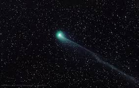
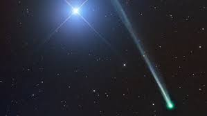
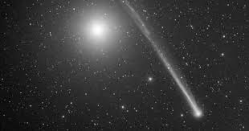

Comet C/2020 F8 (SWAN), perhaps the brightest comet we will see this year, is at its best from now until mid-June. It should be visible in from the UK in the north-western sky after sunset, close to the horizon. Along with the Sun, planets, and asteroids, comets make up the Solar System, the nearest part of the cosmos. Comets are objects made up of rock and ices – and can be anything from the size of mountains to as big surface.

The comet was first spotted in images from the SWAN instrument onboard the Solar and Heliospheric Observatory (SOHO) by amateur astronomer Vladimir Bezugly on 11 September 2025. The presence of the comet was confirmed by other amateur astronomers, having an estimated magnitude of 7.4 and featuring a tail about 2 degrees long.[8] C/2025 R2 is officially the 20th comet discovered through SOHO's SWAN instrument sunset.[11]

The comet was first spotted in images from the SWAN instrument onboard the Solar and Heliospheric Observatory (SOHO) by amateur astronomer Vladimir Bezugly on 11 September 2025. The presence of the comet was confirmed by other amateur astronomers, having an estimated magnitude of 7.4 and featuring a tail about 2 degrees long.[8] C/2025 R2 is officially the 20th comet discovered through SOHO's SWAN instrument sunset.[11]